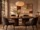

처음 방문한다면 공간의 빛과 구성부터 살펴보세요. 팀의 목적에 맞는 곳을 고른 뒤 날짜와 이용 정보를 정합니다.
입력·계산·화면 간 초안 보존에는 JavaScript와 세션 저장이 필요합니다. 실제 서비스로 전송하지 않습니다.

10:00~20:00 / 최소 2시간. 시작 시간은 고정된 선택 예시이며 실제 재고가 아닙니다.
로컬 데모입니다. 검토한 내용만 이 탭에 보관하며 실제 예약·결제·실시간 재고 검증은 수행하지 않습니다.